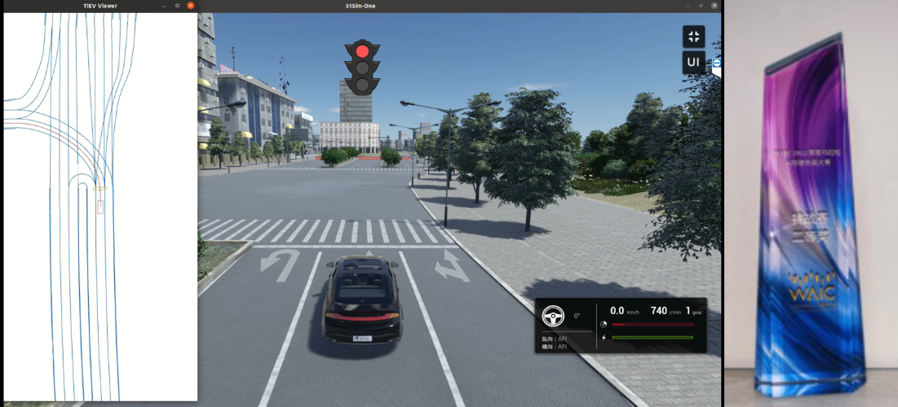
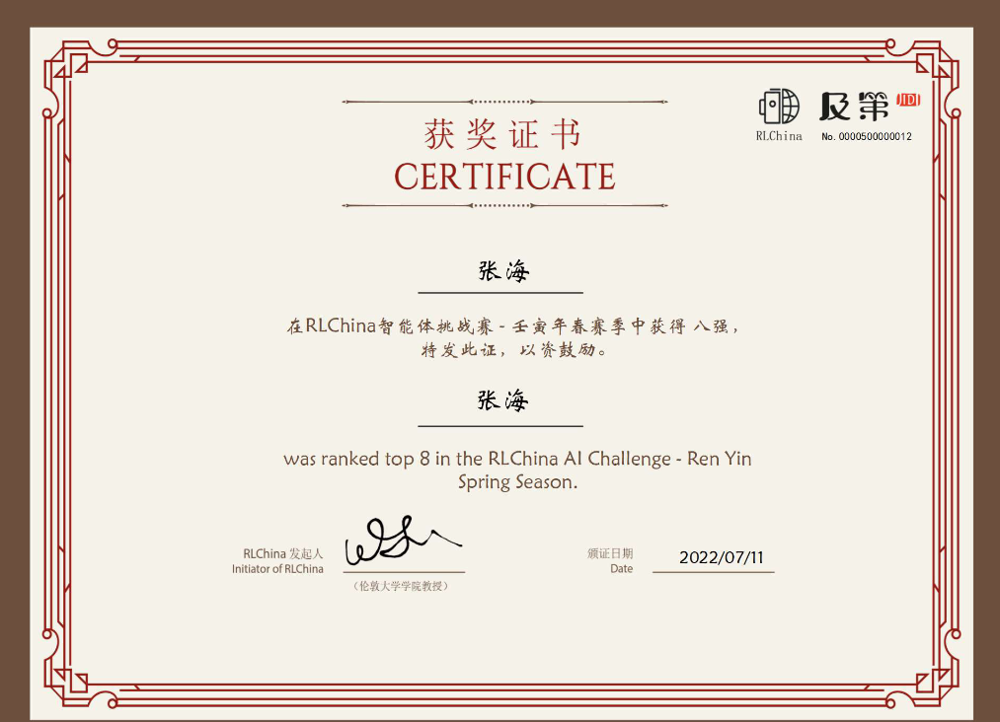
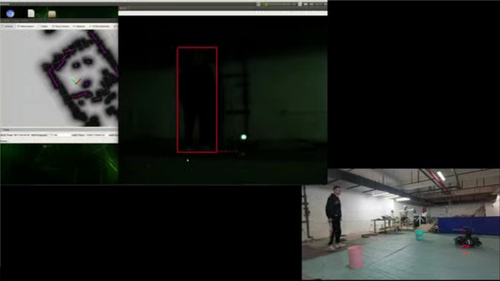
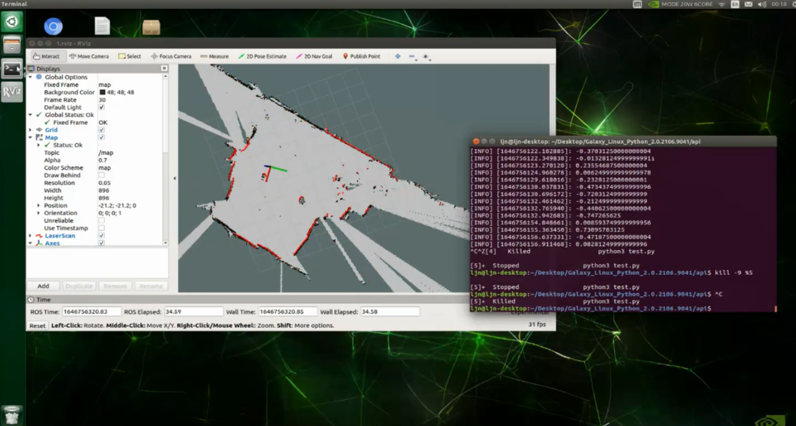
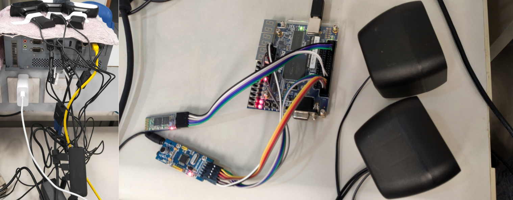
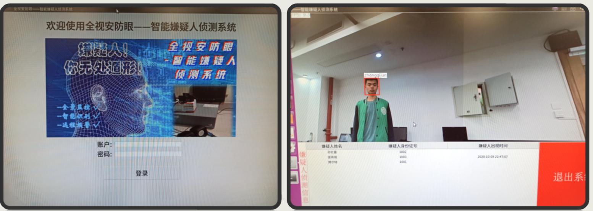
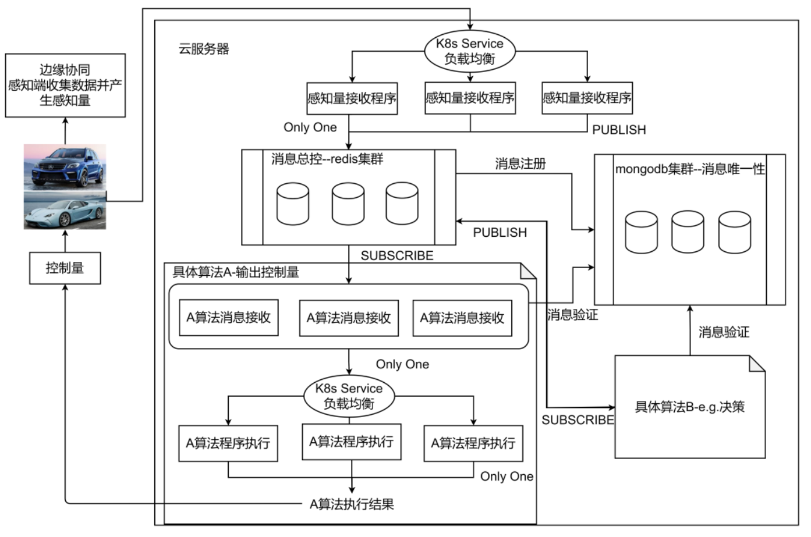

Hai Zhang | 张 海
Hi there!
I'm a third-year graduate student at TIEV lab, Tongji University, supervised by Prof. Junqiao Zhao.
Before this, I got my bachelor degree at Tongji University, major in computer science and technology
and had an exciting experience in NIO served for backend-development engineer.
My research interests lie in model-based reinforcement learning, offline meta reinforcement learning and embodied intelligent w.r.t robotic manipulation🤖.
I'm lucky to work with Prof. Lanqing Li and Prof. Pheng Ann Heng at the Chinese University of HongKong previously.
Now I'm working closely with Prof. Yang Gao at the Institute for Interdisciplinary Information Science at Tsinghua University to explore the generalization ability towards robotic manipulation.
I'm open to collaborations on reinforcement learning / robotics related projects! Feel free to drop me👋.
Github
Zhi Hu
Google Scholar
zhanghenryhai12138[at]gmail[dot]com
Scrutinize What We Ignore: Reining In Task Representation Shift Of Context-Based Offline Meta Reinforcement Learning
Hai Zhang, Boyuan Zheng, Tianying Ji, Jinhang Liu, Anqi Guo, Junqiao Zhao†, Lanqing Li†
Under Review
TL;DR:
We unify the training scheme commonly used in COMRL with the general RL objective, filling the gap between intuition and theoretical justification.
We identify the new issue called task representation shift and theoretically demonstrate that by reining in the previously ignored task representation shift, it is possible to achieve monotonic performance improvements.
arXiv
Towards an Information Theoretic Framework of Context-Based Offline Meta-Reinforcement Learning
Lanqing Li*, Hai Zhang *, Xinyu Zhang, Shatong Zhu, Junqiao Zhao†, Pheng-Ann Heng
NeurIPS 2024
★ Spotlight Presentation (Score: 7 7 8) ★
TL;DR: We propose a novel information theoretic framework of the context-based offline meta-RL paradigm,
which unifies the mainstream COMRL methods, then leads to a general and state-of-the-art algorithm called UNICORN,
exhibiting remarkable generalization across a broad spectrum of RL benchmarks, context shift scenarios, data qualities and deep learning architectures.
Paper • Code
Focus On What Matters: Separated Models For Visual-Based RL Generalization
Di Zhang, Bowen Lv, Hai Zhang, Feifan Yang, Hongtu Zhou, Chang Huang, Hang Yu, Chen Ye, Junqiao Zhao, Changjun Jiang
NeurIPS 2024
TL;DR: We propose SMG, which utilizes a reconstruction-based auxiliary task to extract task-relevant representations from visual observations
and further strengths the generalization ability of RL agents with the help of two consistency losses.
Paper • Code
How to Fine-tune the Model: Unified Model Shift and Model Bias Policy Optimization
Hai Zhang, Hang Yu, Junqiao Zhao†, Di Zhang, Chang Huang, Hongtu Zhou, Xiao Zhang, Chen Ye
NeurIPS 2023
TL;DR:
We theoretically derive an optimization objective that can unify model shift and model bias and then formulate a fine-tuning process,
adaptively adjusting model updates to get a performance improvement guarantee while avoiding model overfitting.
Paper • Code
Safe Reinforcement Learning with Dead-Ends Avoidance and Recovery
Xiao Zhang, Hai Zhang, Hongtu Zhou, Chang Huang, Di Zhang, Chen Ye†, Junqiao Zhao†
IEEE Robotics and Automation Letters
★ Oral Presentation in ICRA 2024 ★
TL;DR:
We propose a method to construct a boundary that discriminates between safe and unsafe states.
The boundary we construct is equivalent to distinguishing dead-end states, indicating the maximum extent to which safe exploration is guaranteed, and thus has a minimum limitation on exploration.
Paper • Code
Some of the competitions and projects.
|

Runner-up in the WAIC: Meta-verse Lights Up Autonomous Driving, AI Simulation Driving Competition. |

Sixth Place in the RLChina AI Challenge - Ren Yin Spring Season |
|
 
Unknown Environment Exploration and Application Device Based on DRL |
 
National Second Prize in |

Invention Patent in submitted: Distributed Vehicle Cloudization |